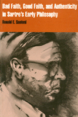

An incisive analysis of Jean-Paul Sartre's early writings
An incisive analysis of Jean-Paul Sartre's early writings


 An incisive analysis of Jean-Paul Sartre's early writings
An incisive analysis of Jean-Paul Sartre's early writings

|  |
Bad Faith, Good Faith, and Authenticity in Sartre's Early PhilosophyRonald E. Santonipaper EAN: 978-1-56639-320-1 (ISBN: 1-56639-320-5) |
"This is an excellent study of a crucial theme in Sartre's work and an outstanding piece of philosophical analysis in the field of Continental thought. Santoni does not simply make charges; he argues his case in highly detailed and discriminating terms.... No author working in this field will be able to ignore Santoni's results."
—Maurice Natanson, Yale University
From the beginning to the end of his philosophizing, Sartre appears to have been concerned with "bad faith"—our "natural" disposition to flee from our freedom and to lie to ourselves. Virtually no aspect of his monumental system has generated more attention. Yet bad faith has been plagued by misinterpretation and misunderstanding. At the same time, Sartre's correlative concepts of "good faith" and "authenticity" have suffered neglect or insufficient attention, or been confused and wrongly identified by Sartre scholars, even by Sartre himself.
Ronald E. Santoni takes on the challenge of distinguishing these concepts, and of showing whether either or both existential "attitudes" afford deliverance from the hell of Sartre's bad faith. He offers the first fill-scale analysis, reconstruction, and differentiation of these ways of existing as they develop in Sartre's early works (1937-1947).
Although he attempts to redeem Sartre's slighted concept of good faith, Santoni warns that it must not be viewed interchangeably with authenticity. Further, in one of the earliest and most sustained studies of Sartre's Notebooks for an Ethics available in English, Santoni shows how Sartre's posthumously published notes for an "ethics of Salvation" confirm his differentiation and argument. The way out of Sartrean hell, Santoni insists, is authenticity—living "with fidelity" to our unjustifiable freedom and assuming responsibility for it.
"Applying to advantage the best elements of both the analytic and the phenomenological approaches, Santoni clarifies apparent ambiguities in Sartre's Being and Nothingness and his posthumously published Notebooks for an Ethics. He points to hitherto unremarked parallels between Sartre and the early Heidegger and effectively demolishes the common assumption that Sartre's ontology cannot logically allow for an ethics."
—Hazel E. Barnes, Professor of Philosophy Emerita, University of Colorado
"Santoni's book is necessary reading for anyone interested in unraveling the complexities of Sartre's notions of bad faith, good faith, and authenticity."
—Joseph S. Catalano, Professor of Philosophy Emeritus, Kean College
"Santoni offers a deeply probing analysis of several key ideas, and their interconnections, in Sartre's early work. Among his claims are that Sartre has a positive, as well as the commonly acknowledged negative, sense of good faith; and that authenticity, emerging from purifying reflection, enables Sartre to show a way out of bad faith. Santoni's carefully elaborated interpretation shows the kind of intellectual integrity that will open the way to further dialogue."
—Phyllis S. Morris, Visiting Professor of Philosophy, Oberlin College
Preface
Introduction
1. Bad Faith and Sincerity: Does Sartre's Analysis Rest on a Mistake?
2. Bad Faith and "Lying to Oneself"
3. The Cynicism of Sartre's "Bad Faith"
4. Good Faith: Can It Be Salvaged?
5. Sartre's Concept of "Authenticity"
6. Authenticity and Good Faith: An Analytic Differentiation
7. The "Unveiling" of Authentic Existence: Corroborating My Differentiation through Sartre's Notebooks
Notes
Index
Ronald E. Santoni is Maria Theresa Barney Professor of Philosophy at Denison University in Ohio. He is a Life Member of Clare Hall, Cambridge University, and an Associate Fellow of Berkeley College, Yale University, whose published work includes over 100 articles, reviews, and commentaries. He is also co-editor of Social and Political Philosophy and editor of Religious Language and the Problem of Religious Knowledge.
© 2015 Temple University. All Rights Reserved. This page: http://www.temple.edu/tempress/titles/999_reg.html.